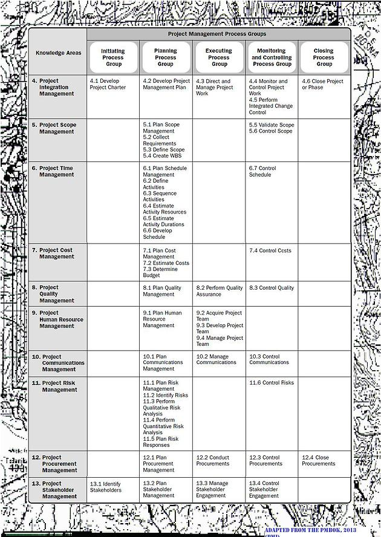
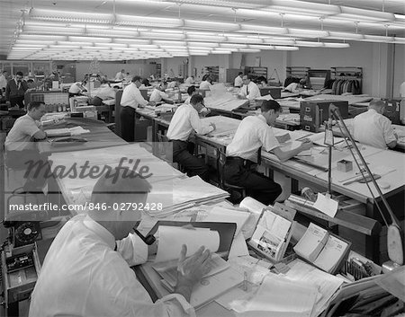
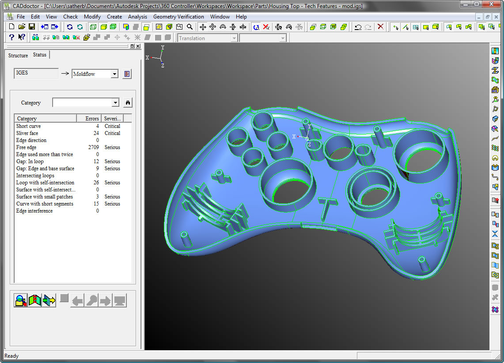
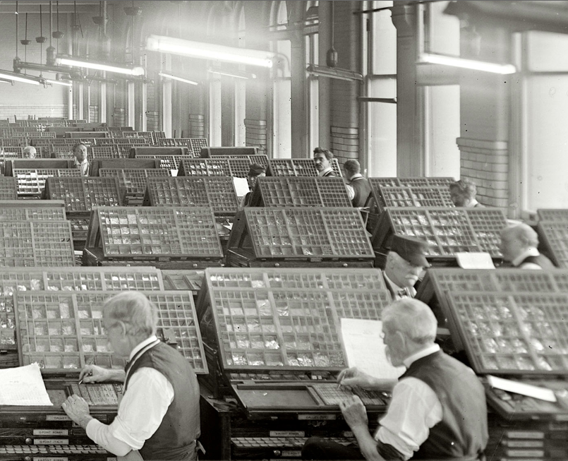
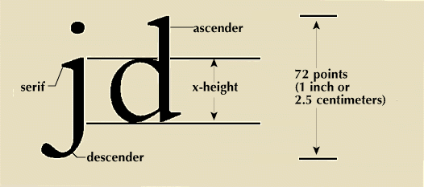
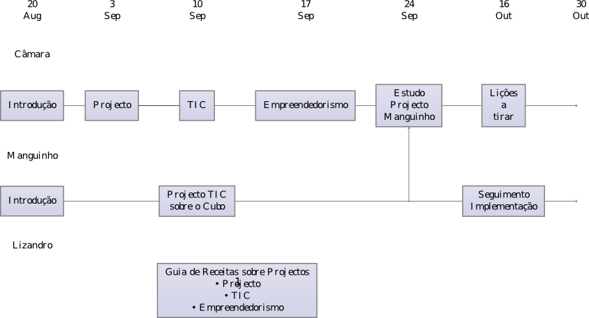
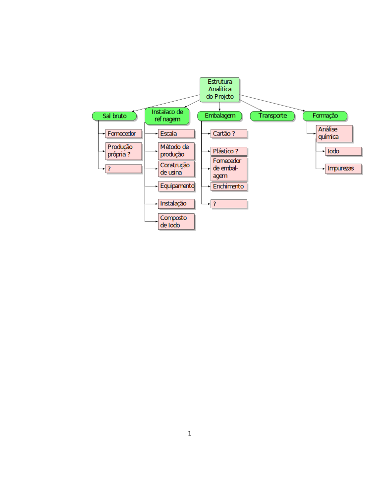

Projecto é uma forma temporária de organizacão com comeco e fim claramente identificáveis.
Projecto é descrito e discutido em termos de processos. O standard americano reconhece 47 processos, agrupados em 5 grupos. Para efeitos de treino e formacão em como formular e conduzir projectos, 10 áreas de conhecimentos estão identificados no standard americano.
O standard descreve o nível mais geral aplicável a qualquer projecto. Todo projecto precisa adaptar estas linhas gerais às condicões específicas do projecto em consideracão.
Igualmente é necessário adaptar as recomendacões às realidades do país.
A terminologia portuguesa para os processos está aqui.

Há muita confusão aqui. A primeira perspectiva a entender, é que TIC não é uma actividade em si mas mais "ferramenta" de uso em qualquer ramo de actividade. De modo, que a primeira questão é que ramos de actividade existem ou estão a ser criados em Cabo Verde e que necessitam de TIC como ferramenta.
Um exemplo são os andares de desenhadores que antigamente apareciam assim, tudo foi reduzido a matemática.

Foram substituídos por aplicativos que aparecem assim:

É de se notar que grande parte deste trabalho de conversão foi feito e continua a ser feito por gente em desenho, não por gente abstrata de TIC. Ou seja conhecimento do ramo é essencial para esta mudanca de ferramentas.
Outro exemplo: em tipografia, que antigamente aparecia assim:

Hoje é tratada assim, sem este batalhão de tipógrafos. As letras já não são fundidas, mas sim representadas
dentro de um computador por parâmetros e curvas matemáticas, geralmente polinômios de Bézier do terceiro grau.

Algumas coisas são óbvias, como no caso de um banco que necessita de uma mínima base TIC para funcionar. Mas isto não quer dizer que TIC para bancos seja área para empreendedorismo caboverdeano. Pelo contrário, o mais natural será que o banco compre um sistema no estrangeiro.
Até pouco tempo atrás, o que hoje se chama TIC era chamado de TI. O "C" aparece devido à crescente influência da comunicacão para o indivíduo privado.
Depois de uma apresentacão do significado das três letras em TIC, passaremos a um estudo de como um projecto TIC pode ser planeado. Ver "Planeamento" em Projecto.
A caracterizacão em economia, é a de ser alguém que consegue alterar uma funcão de producão corrente, combinando ou alterando factores de producão de uma forma inovativa.
Empreendedorismo, não é algo que se aprende no banco da escola. Mas tanto os países desenvolvidos, como os em desenvolvimento procuram criar condicões para que o empreendedorismo desabroche. Mas isto é mais fácil de dizer do que fazer.
Talvez a maneira mais fácil de se formar uma opinião acerca de empreendedorismo, é por estudo de casos históricos, deixando o passar do tempo revelar a vida vivida do empreendedor.
Um empreendedor, geralmente continua a ser empreendedor pelo resto da vida.
A carreira que leva Watt à fama comeca com o condensador separado para a máquina a vapor.
Ver Watt steam engine
O projeto é experimental, para ver até onde se pode chegar com alunos sem formacão prévia.
Até agora temos tratado dos fundamentos de como um computador funciona. Inevitávelmente é preciso saltar sobre muitos detalhes, mas os alunos parecem aceitar estes saltos.
As próximas etapas são:
| 2 de Agosto | O sistema operativo | Um program especial que controla periféricos e uso da memória | |
| Língua de programcão | o que quer dizer ? | ||
| O compilador | o que quer dizer ? | ||
| 3 de Setembro | Componentes básicos de algoritmos de programas | subrutinas, condicionais, loops | Primeiro programa: encontrar todos os números primos, abaixo de 50 utilizandro três métodos: um muito bruto, um bruto e o Crivo de Eratóstenes |
Como regra, documentos são versionados, isto é: existe uma versão corrente, e a partir desta versão é necessário que se possa aceder a qualquer versão anterior.
Além da versão cada documento carrega regras administrativas restringindo quem tem poder de acesso para modificar o documento.
Documentos são geralmente guardados em repositórios apropriados, com seguranca apropriada. Documentos exegidos por lei têm que ser mantidos em conformidade com a lei.
Para manter a lista de alteracões, no caso mais simples, pode-se usar o programa Word da MicroSoft, em modo de mudanca. Ver curta introducão em Track changes while you edit
Projectos de certa envergadura requerem ferramentas mais custosas. Uma delas é a SharePoint da Microsoft. Ver figuras ilustrativas em SharePoint for Cisco FanBoys. Note o dono, as datas de modificacão, e as versões do ficheiro myfile.txt, que está com 291 versões.
Note que a ferramenta é construída SOBRE os conceitos de Projecto.
| 27 de Agosto | 5.2, 5.3, 5.4 | ? |
| 28 de Agosto | documentos e ferramentas num projecto | documentos de um projeto e ferramentas utilizadas |
| 2 de Setembro | Matriz requisitos/pacotes a entregar | O resultado final das ligacões entre requisitos e pacotes de trabalho. Ver figura 5-6 em 5.2, Requisitos. |
| Simulacão de um projecto sobre sal de mesa | Projeto possível com ligacão a Cabo Verde | |
| 3 de Setembro | Simulacão de um projecto sobre sal de mesa | Ver informacão no "tab" Sal Maio |
| Análise de riscos | ||
| Sequencia de actividades, cronograma | ||
| 4 de Setembro | Simulacão de um projecto sobre sal de mesa | Recursos humanos |
| Estimar os custos | ||
| Garantir qualidade | ||
| 9 de Setembro | Tecnologias em TIC, ver seccão Livro | Projeto a nível nacional, ver o link a partir da página inicial |

Em termos fisiológicos, o consumo de sal pode rondar os 2 gramas por pessoa, ou seja 1000 quilos por dia em Cabo Verde, ou 30 toneladas por mês. Na Inglaterra as recomendacões de consumo máximo são:
| Idade | Consumo máximo de salt por dia (g) |
| 0-6 meses | <1g / dia |
| 6-12 meses | 1g / dia |
| 1-3 years | 2g / dia |
| 4-6 years | 3g / dia |
| 7-10 years | 5g / dia |
| 11 years and above | 6g / dia |
Sal iodado, produzido em Portugal é vendido no "chinês" em embalagens de 250 gramas por 80 escudos. 30 toneladas teria um valor 120 000 vezes 80 escudos ou cerca de 10 mil contos.
Flor de Sal é um sal especial de alto valor (cerca de 23 Euros, ou 3000 escudos por quilo), utilizado em culinária de ricos. Ver Rui Simeão em Tavira para informacão dada por um produtor portugês.
Ver producão de sal bruto em Salinas do Maio.
Ilustracões de embalagems em Embalagem
Escopo ?

Vamos tratar apenas da tipografia (inglês typesetting) do livro.
Para este efeito vamos definir um livro, como sendo uma série de letras e outros símbolos, incluindo
imagens por exemplo.
Esta série é dividida em "palavras", as palavras em linhas, as linhas em parágrafos,
os parágrafos em páginas, as páginas em capítulos ou seccões.
Além disso, um livro contém índices de "navegacão" como conteúdo e índice remissivo, e notas.
Ver Datapage para uma empresa do género.
Um projeto, geralmente nunca vem só, leva em geral a extensões a áreas próximas. Ver como a Datapage passa de tipografia para publicacão.A Datapage usa ferramentas comerciais com preco elevado, como ArborText, Framemaker, QuarkXPress. Aqui usamos TeX, que é um produto livre de uso, por só estarmos atrás das tecnologias envolvidas.
Podemos retirar um EAP, diretamente do site da Datapage: